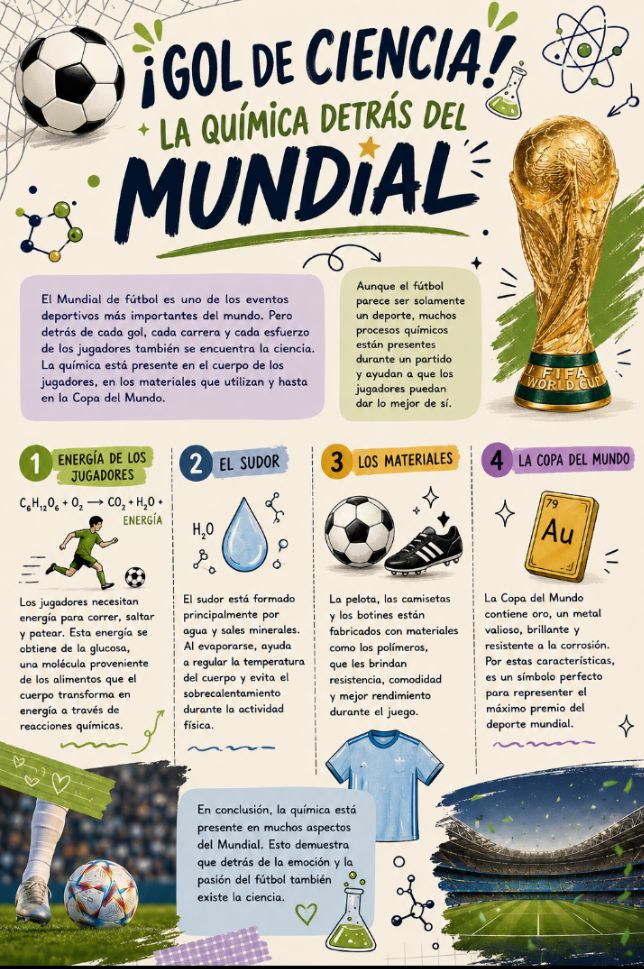

El Mundial de fútbol es uno de los eventos deportivos más importantes del mundo. Pero detrás de cada gol, cada carrera y cada esfuerzo de los jugadores también se encuentra la ciencia.
Aunque el fútbol parece ser solamente un deporte, muchos procesos químicos están presentes durante un partido y ayudan a que los jugadores puedan dar lo mejor de sí.

1. La energía de los jugadores
Los jugadores necesitan energía para correr, saltar y patear. Esta energía se obtiene de la glucosa, una molécula proveniente de los alimentos que el cuerpo transforma en energía a través de reacciones químicas.
2. El sudor
El sudor está formado principalmente por agua y sales minerales. Al evaporarse, ayuda a regular la temperatura del cuerpo y evita el sobrecalentamiento durante la actividad física.
3. Los materiales
La pelota, las camisetas y los botines están fabricados con materiales como los polímeros, que les brindan resistencia, comodidad y mejor rendimiento durante el juego.
4. La Copa del Mundo
La Copa del Mundo contiene oro (Au), un metal valioso, brillante y resistente a la corrosión. Por estas características, es un símbolo perfecto para representar el máximo premio del deporte mundial.
En conclusión, la química está presente en muchos aspectos del Mundial. Esto demuestra que detrás de la emoción y la pasión del fútbol también existe la ciencia.